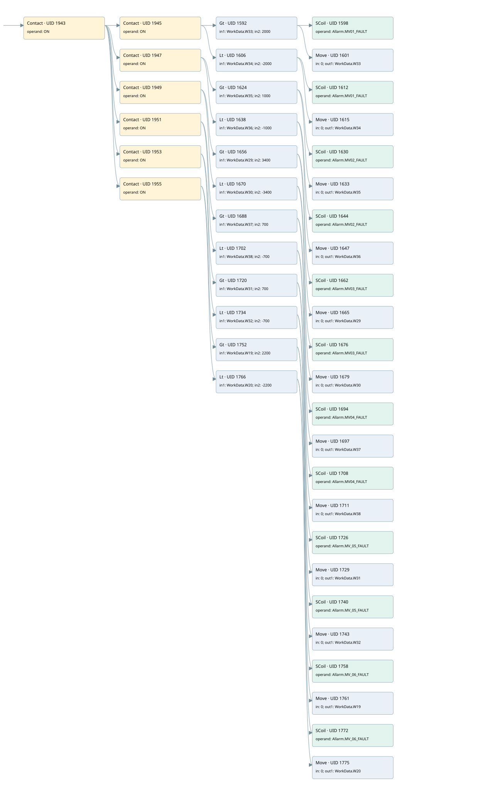

motorized valve fault
valve control loop · 검색 색인 순서 13 · 원본 내부 NID 추정 12
백업 PLF 원본의 2930761 바이트 위치에서 복원한 XML. 검색 문서 1714의 객체 키 161022008612000000000000와 연결했다. 이름 해석 67/67개. 남은 RefId는 상수 또는 미해석 참조다.
연결 구조 다시 그리기
원본 Part/PCon/Wire를 이용한 연결도다. TIA 화면의 래더 배치 또는 실행 결과를 재현한 그림은 아니다. 핀 연결은 아래 표와 원본 XML을 기준으로 읽는다. 노드 위에 마우스를 두면 피연산자 이름을 볼 수 있다.

접점·코일·블록과 피연산자
| Part UID | Gate | Negated 핀 | 연결 피연산자 |
|---|---|---|---|
| 1943 | Contact | operand = ON | |
| 1945 | Contact | operand = ON | |
| 1592 | Gt | in1 = WorkData.W33; in2 = 2000 | |
| 1598 | SCoil | operand = Allarm.MV01_FAULT | |
| 1601 | Move | in = 0; out1 = WorkData.W33 | |
| 1606 | Lt | in1 = WorkData.W34; in2 = -2000 | |
| 1612 | SCoil | operand = Allarm.MV01_FAULT | |
| 1615 | Move | in = 0; out1 = WorkData.W34 | |
| 1947 | Contact | operand = ON | |
| 1624 | Gt | in1 = WorkData.W35; in2 = 1000 | |
| 1630 | SCoil | operand = Allarm.MV02_FAULT | |
| 1633 | Move | in = 0; out1 = WorkData.W35 | |
| 1638 | Lt | in1 = WorkData.W36; in2 = -1000 | |
| 1644 | SCoil | operand = Allarm.MV02_FAULT | |
| 1647 | Move | in = 0; out1 = WorkData.W36 | |
| 1949 | Contact | operand = ON | |
| 1656 | Gt | in1 = WorkData.W29; in2 = 3400 | |
| 1662 | SCoil | operand = Allarm.MV03_FAULT | |
| 1665 | Move | in = 0; out1 = WorkData.W29 | |
| 1670 | Lt | in1 = WorkData.W30; in2 = -3400 | |
| 1676 | SCoil | operand = Allarm.MV03_FAULT | |
| 1679 | Move | in = 0; out1 = WorkData.W30 | |
| 1951 | Contact | operand = ON | |
| 1688 | Gt | in1 = WorkData.W37; in2 = 700 | |
| 1694 | SCoil | operand = Allarm.MV04_FAULT | |
| 1697 | Move | in = 0; out1 = WorkData.W37 | |
| 1702 | Lt | in1 = WorkData.W38; in2 = -700 | |
| 1708 | SCoil | operand = Allarm.MV04_FAULT | |
| 1711 | Move | in = 0; out1 = WorkData.W38 | |
| 1953 | Contact | operand = ON | |
| 1720 | Gt | in1 = WorkData.W31; in2 = 700 | |
| 1726 | SCoil | operand = Allarm.MV_05_FAULT | |
| 1729 | Move | in = 0; out1 = WorkData.W31 | |
| 1734 | Lt | in1 = WorkData.W32; in2 = -700 | |
| 1740 | SCoil | operand = Allarm.MV_05_FAULT | |
| 1743 | Move | in = 0; out1 = WorkData.W32 | |
| 1955 | Contact | operand = ON | |
| 1752 | Gt | in1 = WorkData.W19; in2 = 2200 | |
| 1758 | SCoil | operand = Allarm.MV_06_FAULT | |
| 1761 | Move | in = 0; out1 = WorkData.W19 | |
| 1766 | Lt | in1 = WorkData.W20; in2 = -2200 | |
| 1772 | SCoil | operand = Allarm.MV_06_FAULT | |
| 1775 | Move | in = 0; out1 = WorkData.W20 |
접점 경로를 펼친 조건식
Contact·O/A·비교기의 원본 연결을 읽기 쉽게 펼친 보조 해석이다. POWER는 전원 레일 시작을 뜻한다. 호출 블록·에지·타이머의 내부 동작과 다중 쓰기 순서는 이 표로 실행 검증하지 않았다. 미해석 핀과 RefId는 원문 연결표에서 확인한다.
| UID | 동작 | 대상 | 원본 접점 경로 | 내용 |
|---|---|---|---|---|
| 1598 | SCoil | Allarm.MV01_FAULT | (ON AND [WorkData.W33 > 2000]) | 조건 성립 시 Set |
| 1601 | Move | WorkData.W33 | (ON AND [WorkData.W33 > 2000]) | Move 입력 0 |
| 1612 | SCoil | Allarm.MV01_FAULT | (ON AND [WorkData.W34 < -2000]) | 조건 성립 시 Set |
| 1615 | Move | WorkData.W34 | (ON AND [WorkData.W34 < -2000]) | Move 입력 0 |
| 1630 | SCoil | Allarm.MV02_FAULT | (ON AND [WorkData.W35 > 1000]) | 조건 성립 시 Set |
| 1633 | Move | WorkData.W35 | (ON AND [WorkData.W35 > 1000]) | Move 입력 0 |
| 1644 | SCoil | Allarm.MV02_FAULT | (ON AND [WorkData.W36 < -1000]) | 조건 성립 시 Set |
| 1647 | Move | WorkData.W36 | (ON AND [WorkData.W36 < -1000]) | Move 입력 0 |
| 1662 | SCoil | Allarm.MV03_FAULT | (ON AND [WorkData.W29 > 3400]) | 조건 성립 시 Set |
| 1665 | Move | WorkData.W29 | (ON AND [WorkData.W29 > 3400]) | Move 입력 0 |
| 1676 | SCoil | Allarm.MV03_FAULT | (ON AND [WorkData.W30 < -3400]) | 조건 성립 시 Set |
| 1679 | Move | WorkData.W30 | (ON AND [WorkData.W30 < -3400]) | Move 입력 0 |
| 1694 | SCoil | Allarm.MV04_FAULT | (ON AND [WorkData.W37 > 700]) | 조건 성립 시 Set |
| 1697 | Move | WorkData.W37 | (ON AND [WorkData.W37 > 700]) | Move 입력 0 |
| 1708 | SCoil | Allarm.MV04_FAULT | (ON AND [WorkData.W38 < -700]) | 조건 성립 시 Set |
| 1711 | Move | WorkData.W38 | (ON AND [WorkData.W38 < -700]) | Move 입력 0 |
| 1726 | SCoil | Allarm.MV_05_FAULT | (ON AND [WorkData.W31 > 700]) | 조건 성립 시 Set |
| 1729 | Move | WorkData.W31 | (ON AND [WorkData.W31 > 700]) | Move 입력 0 |
| 1740 | SCoil | Allarm.MV_05_FAULT | (ON AND [WorkData.W32 < -700]) | 조건 성립 시 Set |
| 1743 | Move | WorkData.W32 | (ON AND [WorkData.W32 < -700]) | Move 입력 0 |
| 1758 | SCoil | Allarm.MV_06_FAULT | (ON AND [WorkData.W19 > 2200]) | 조건 성립 시 Set |
| 1761 | Move | WorkData.W19 | (ON AND [WorkData.W19 > 2200]) | Move 입력 0 |
| 1772 | SCoil | Allarm.MV_06_FAULT | (ON AND [WorkData.W20 < -2200]) | 조건 성립 시 Set |
| 1775 | Move | WorkData.W20 | (ON AND [WorkData.W20 < -2200]) | Move 입력 0 |
원본 배선 연결
| Wire UID | 동일 Wire 연결 끝점 |
|---|---|
| 1957 | Powerrail {} ↔ Part 1943.in |
| 1845 | ORef 1778 (ON) ↔ Part 1943.operand |
| 1944 | Part 1943.out ↔ Part 1945.in ↔ Part 1947.in ↔ Part 1949.in ↔ Part 1951.in ↔ Part 1953.in ↔ Part 1955.in |
| 1846 | ORef 1779 (ON) ↔ Part 1945.operand |
| 1946 | Part 1945.out ↔ Part 1592.pre ↔ Part 1606.pre |
| 1847 | ORef 1780 (WorkData.W33) ↔ Part 1592.in1 |
| 1848 | ORef 1781 (2000) ↔ Part 1592.in2 |
| 1849 | Part 1592.out ↔ Part 1598.in ↔ Part 1601.en |
| 1850 | ORef 1782 (Allarm.MV01_FAULT) ↔ Part 1598.operand |
| 1851 | ORef 1783 (0) ↔ Part 1601.in |
| 1852 | Part 1601.out1 ↔ ORef 1784 (WorkData.W33) |
| 1854 | ORef 1785 (WorkData.W34) ↔ Part 1606.in1 |
| 1855 | ORef 1786 (-2000) ↔ Part 1606.in2 |
| 1856 | Part 1606.out ↔ Part 1612.in ↔ Part 1615.en |
| 1857 | ORef 1787 (Allarm.MV01_FAULT) ↔ Part 1612.operand |
| 1858 | ORef 1788 (0) ↔ Part 1615.in |
| 1859 | Part 1615.out1 ↔ ORef 1789 (WorkData.W34) |
| 1862 | ORef 1790 (ON) ↔ Part 1947.operand |
| 1948 | Part 1947.out ↔ Part 1624.pre ↔ Part 1638.pre |
| 1863 | ORef 1791 (WorkData.W35) ↔ Part 1624.in1 |
| 1864 | ORef 1792 (1000) ↔ Part 1624.in2 |
| 1865 | Part 1624.out ↔ Part 1630.in ↔ Part 1633.en |
| 1866 | ORef 1793 (Allarm.MV02_FAULT) ↔ Part 1630.operand |
| 1867 | ORef 1794 (0) ↔ Part 1633.in |
| 1868 | Part 1633.out1 ↔ ORef 1795 (WorkData.W35) |
| 1870 | ORef 1796 (WorkData.W36) ↔ Part 1638.in1 |
| 1871 | ORef 1797 (-1000) ↔ Part 1638.in2 |
| 1872 | Part 1638.out ↔ Part 1644.in ↔ Part 1647.en |
| 1873 | ORef 1798 (Allarm.MV02_FAULT) ↔ Part 1644.operand |
| 1874 | ORef 1799 (0) ↔ Part 1647.in |
| 1875 | Part 1647.out1 ↔ ORef 1800 (WorkData.W36) |
| 1878 | ORef 1801 (ON) ↔ Part 1949.operand |
| 1950 | Part 1949.out ↔ Part 1656.pre ↔ Part 1670.pre |
| 1879 | ORef 1802 (WorkData.W29) ↔ Part 1656.in1 |
| 1880 | ORef 1803 (3400) ↔ Part 1656.in2 |
| 1881 | Part 1656.out ↔ Part 1662.in ↔ Part 1665.en |
| 1882 | ORef 1804 (Allarm.MV03_FAULT) ↔ Part 1662.operand |
| 1883 | ORef 1805 (0) ↔ Part 1665.in |
| 1884 | Part 1665.out1 ↔ ORef 1806 (WorkData.W29) |
| 1886 | ORef 1807 (WorkData.W30) ↔ Part 1670.in1 |
| 1887 | ORef 1808 (-3400) ↔ Part 1670.in2 |
| 1888 | Part 1670.out ↔ Part 1676.in ↔ Part 1679.en |
| 1889 | ORef 1809 (Allarm.MV03_FAULT) ↔ Part 1676.operand |
| 1890 | ORef 1810 (0) ↔ Part 1679.in |
| 1891 | Part 1679.out1 ↔ ORef 1811 (WorkData.W30) |
| 1894 | ORef 1812 (ON) ↔ Part 1951.operand |
| 1952 | Part 1951.out ↔ Part 1688.pre ↔ Part 1702.pre |
| 1895 | ORef 1813 (WorkData.W37) ↔ Part 1688.in1 |
| 1896 | ORef 1814 (700) ↔ Part 1688.in2 |
| 1897 | Part 1688.out ↔ Part 1694.in ↔ Part 1697.en |
| 1898 | ORef 1815 (Allarm.MV04_FAULT) ↔ Part 1694.operand |
| 1899 | ORef 1816 (0) ↔ Part 1697.in |
| 1900 | Part 1697.out1 ↔ ORef 1817 (WorkData.W37) |
| 1902 | ORef 1818 (WorkData.W38) ↔ Part 1702.in1 |
| 1903 | ORef 1819 (-700) ↔ Part 1702.in2 |
| 1904 | Part 1702.out ↔ Part 1708.in ↔ Part 1711.en |
| 1905 | ORef 1820 (Allarm.MV04_FAULT) ↔ Part 1708.operand |
| 1906 | ORef 1821 (0) ↔ Part 1711.in |
| 1907 | Part 1711.out1 ↔ ORef 1822 (WorkData.W38) |
| 1910 | ORef 1823 (ON) ↔ Part 1953.operand |
| 1954 | Part 1953.out ↔ Part 1720.pre ↔ Part 1734.pre |
| 1911 | ORef 1824 (WorkData.W31) ↔ Part 1720.in1 |
| 1912 | ORef 1825 (700) ↔ Part 1720.in2 |
| 1913 | Part 1720.out ↔ Part 1726.in ↔ Part 1729.en |
| 1914 | ORef 1826 (Allarm.MV_05_FAULT) ↔ Part 1726.operand |
| 1915 | ORef 1827 (0) ↔ Part 1729.in |
| 1916 | Part 1729.out1 ↔ ORef 1828 (WorkData.W31) |
| 1918 | ORef 1829 (WorkData.W32) ↔ Part 1734.in1 |
| 1919 | ORef 1830 (-700) ↔ Part 1734.in2 |
| 1920 | Part 1734.out ↔ Part 1740.in ↔ Part 1743.en |
| 1921 | ORef 1831 (Allarm.MV_05_FAULT) ↔ Part 1740.operand |
| 1922 | ORef 1832 (0) ↔ Part 1743.in |
| 1923 | Part 1743.out1 ↔ ORef 1833 (WorkData.W32) |
| 1926 | ORef 1834 (ON) ↔ Part 1955.operand |
| 1956 | Part 1955.out ↔ Part 1752.pre ↔ Part 1766.pre |
| 1927 | ORef 1835 (WorkData.W19) ↔ Part 1752.in1 |
| 1928 | ORef 1836 (2200) ↔ Part 1752.in2 |
| 1929 | Part 1752.out ↔ Part 1758.in ↔ Part 1761.en |
| 1930 | ORef 1837 (Allarm.MV_06_FAULT) ↔ Part 1758.operand |
| 1931 | ORef 1838 (0) ↔ Part 1761.in |
| 1932 | Part 1761.out1 ↔ ORef 1839 (WorkData.W19) |
| 1934 | ORef 1840 (WorkData.W20) ↔ Part 1766.in1 |
| 1935 | ORef 1841 (-2200) ↔ Part 1766.in2 |
| 1936 | Part 1766.out ↔ Part 1772.in ↔ Part 1775.en |
| 1937 | ORef 1842 (Allarm.MV_06_FAULT) ↔ Part 1772.operand |
| 1938 | ORef 1843 (0) ↔ Part 1775.in |
| 1939 | Part 1775.out1 ↔ ORef 1844 (WorkData.W20) |
식별자 해석 근거 67개
| ORef UID | RefId | 이름 | IdentXmlPart 파일 | 해석 방법 |
|---|---|---|---|---|
| 1778 | 1 | ON | 0617-IdentXmlPart.xml | UID/RID + search-text + NID agreement |
| 1779 | 1 | ON | 0617-IdentXmlPart.xml | UID/RID + search-text + NID agreement |
| 1780 | 109 | WorkData.W33 | 0619-IdentXmlPart.xml | UID/RID + search-text + NID agreement |
| 1781 | 145 | 2000 | 0620-IdentXmlPart.xml | literal candidate: UID/RID/NID + nearby named declarations + search-text agreement |
| 1782 | 11 | Allarm.MV01_FAULT | 0619-IdentXmlPart.xml | UID/RID + search-text + NID agreement |
| 1783 | 38 | 0 | 0620-IdentXmlPart.xml | literal candidate: UID/RID/NID + nearby named declarations + search-text agreement |
| 1784 | 109 | WorkData.W33 | 0619-IdentXmlPart.xml | UID/RID + search-text + NID agreement |
| 1785 | 111 | WorkData.W34 | 0619-IdentXmlPart.xml | UID/RID + search-text + NID agreement |
| 1786 | 147 | -2000 | 0620-IdentXmlPart.xml | literal candidate: UID/RID/NID + nearby named declarations + search-text agreement |
| 1787 | 11 | Allarm.MV01_FAULT | 0619-IdentXmlPart.xml | UID/RID + search-text + NID agreement |
| 1788 | 38 | 0 | 0620-IdentXmlPart.xml | literal candidate: UID/RID/NID + nearby named declarations + search-text agreement |
| 1789 | 111 | WorkData.W34 | 0619-IdentXmlPart.xml | UID/RID + search-text + NID agreement |
| 1790 | 1 | ON | 0617-IdentXmlPart.xml | UID/RID + search-text + NID agreement |
| 1791 | 115 | WorkData.W35 | 0619-IdentXmlPart.xml | UID/RID + search-text + NID agreement |
| 1792 | 149 | 1000 | 0620-IdentXmlPart.xml | literal candidate: UID/RID/NID + nearby named declarations + search-text agreement |
| 1793 | 22 | Allarm.MV02_FAULT | 0619-IdentXmlPart.xml | UID/RID + search-text + NID agreement |
| 1794 | 38 | 0 | 0620-IdentXmlPart.xml | literal candidate: UID/RID/NID + nearby named declarations + search-text agreement |
| 1795 | 115 | WorkData.W35 | 0619-IdentXmlPart.xml | UID/RID + search-text + NID agreement |
| 1796 | 117 | WorkData.W36 | 0619-IdentXmlPart.xml | UID/RID + search-text + NID agreement |
| 1797 | 151 | -1000 | 0620-IdentXmlPart.xml | literal candidate: UID/RID/NID + nearby named declarations + search-text agreement |
| 1798 | 22 | Allarm.MV02_FAULT | 0619-IdentXmlPart.xml | UID/RID + search-text + NID agreement |
| 1799 | 38 | 0 | 0620-IdentXmlPart.xml | literal candidate: UID/RID/NID + nearby named declarations + search-text agreement |
| 1800 | 117 | WorkData.W36 | 0619-IdentXmlPart.xml | UID/RID + search-text + NID agreement |
| 1801 | 1 | ON | 0617-IdentXmlPart.xml | UID/RID + search-text + NID agreement |
| 1802 | 121 | WorkData.W29 | 0619-IdentXmlPart.xml | UID/RID + search-text + NID agreement |
| 1803 | 153 | 3400 | 0620-IdentXmlPart.xml | literal candidate: UID/RID/NID + nearby named declarations + search-text agreement |
| 1804 | 45 | Allarm.MV03_FAULT | 0619-IdentXmlPart.xml | UID/RID + search-text + NID agreement |
| 1805 | 38 | 0 | 0620-IdentXmlPart.xml | literal candidate: UID/RID/NID + nearby named declarations + search-text agreement |
| 1806 | 121 | WorkData.W29 | 0619-IdentXmlPart.xml | UID/RID + search-text + NID agreement |
| 1807 | 123 | WorkData.W30 | 0619-IdentXmlPart.xml | UID/RID + search-text + NID agreement |
| 1808 | 155 | -3400 | 0620-IdentXmlPart.xml | literal candidate: UID/RID/NID + nearby named declarations + search-text agreement |
| 1809 | 45 | Allarm.MV03_FAULT | 0619-IdentXmlPart.xml | UID/RID + search-text + NID agreement |
| 1810 | 38 | 0 | 0620-IdentXmlPart.xml | literal candidate: UID/RID/NID + nearby named declarations + search-text agreement |
| 1811 | 123 | WorkData.W30 | 0619-IdentXmlPart.xml | UID/RID + search-text + NID agreement |
| 1812 | 1 | ON | 0617-IdentXmlPart.xml | UID/RID + search-text + NID agreement |
| 1813 | 128 | WorkData.W37 | 0619-IdentXmlPart.xml | UID/RID + search-text + NID agreement |
| 1814 | 157 | 700 | 0620-IdentXmlPart.xml | literal candidate: UID/RID/NID + nearby named declarations + search-text agreement |
| 1815 | 54 | Allarm.MV04_FAULT | 0619-IdentXmlPart.xml | UID/RID + search-text + NID agreement |
| 1816 | 38 | 0 | 0620-IdentXmlPart.xml | literal candidate: UID/RID/NID + nearby named declarations + search-text agreement |
| 1817 | 128 | WorkData.W37 | 0619-IdentXmlPart.xml | UID/RID + search-text + NID agreement |
| 1818 | 130 | WorkData.W38 | 0619-IdentXmlPart.xml | UID/RID + search-text + NID agreement |
| 1819 | 159 | -700 | 0620-IdentXmlPart.xml | literal candidate: UID/RID/NID + nearby named declarations + search-text agreement |
| 1820 | 54 | Allarm.MV04_FAULT | 0619-IdentXmlPart.xml | UID/RID + search-text + NID agreement |
| 1821 | 38 | 0 | 0620-IdentXmlPart.xml | literal candidate: UID/RID/NID + nearby named declarations + search-text agreement |
| 1822 | 130 | WorkData.W38 | 0619-IdentXmlPart.xml | UID/RID + search-text + NID agreement |
| 1823 | 1 | ON | 0617-IdentXmlPart.xml | UID/RID + search-text + NID agreement |
| 1824 | 134 | WorkData.W31 | 0619-IdentXmlPart.xml | UID/RID + search-text + NID agreement |
| 1825 | 157 | 700 | 0620-IdentXmlPart.xml | literal candidate: UID/RID/NID + nearby named declarations + search-text agreement |
| 1826 | 64 | Allarm.MV_05_FAULT | 0619-IdentXmlPart.xml | UID/RID + search-text + NID agreement |
| 1827 | 38 | 0 | 0620-IdentXmlPart.xml | literal candidate: UID/RID/NID + nearby named declarations + search-text agreement |
| 1828 | 134 | WorkData.W31 | 0619-IdentXmlPart.xml | UID/RID + search-text + NID agreement |
| 1829 | 136 | WorkData.W32 | 0619-IdentXmlPart.xml | UID/RID + search-text + NID agreement |
| 1830 | 159 | -700 | 0620-IdentXmlPart.xml | literal candidate: UID/RID/NID + nearby named declarations + search-text agreement |
| 1831 | 64 | Allarm.MV_05_FAULT | 0619-IdentXmlPart.xml | UID/RID + search-text + NID agreement |
| 1832 | 38 | 0 | 0620-IdentXmlPart.xml | literal candidate: UID/RID/NID + nearby named declarations + search-text agreement |
| 1833 | 136 | WorkData.W32 | 0619-IdentXmlPart.xml | UID/RID + search-text + NID agreement |
| 1834 | 1 | ON | 0617-IdentXmlPart.xml | UID/RID + search-text + NID agreement |
| 1835 | 140 | WorkData.W19 | 0619-IdentXmlPart.xml | UID/RID + search-text + NID agreement |
| 1836 | 163 | 2200 | 0620-IdentXmlPart.xml | literal candidate: UID/RID/NID + nearby named declarations + search-text agreement |
| 1837 | 96 | Allarm.MV_06_FAULT | 0619-IdentXmlPart.xml | UID/RID + search-text + NID agreement |
| 1838 | 38 | 0 | 0620-IdentXmlPart.xml | literal candidate: UID/RID/NID + nearby named declarations + search-text agreement |
| 1839 | 140 | WorkData.W19 | 0619-IdentXmlPart.xml | UID/RID + search-text + NID agreement |
| 1840 | 142 | WorkData.W20 | 0619-IdentXmlPart.xml | UID/RID + search-text + NID agreement |
| 1841 | 165 | -2200 | 0620-IdentXmlPart.xml | literal candidate: UID/RID/NID + nearby named declarations + search-text agreement |
| 1842 | 96 | Allarm.MV_06_FAULT | 0619-IdentXmlPart.xml | UID/RID + search-text + NID agreement |
| 1843 | 38 | 0 | 0620-IdentXmlPart.xml | literal candidate: UID/RID/NID + nearby named declarations + search-text agreement |
| 1844 | 142 | WorkData.W20 | 0619-IdentXmlPart.xml | UID/RID + search-text + NID agreement |
검색 코드 보조 자료
참조 명칭을 찾기 위한 자료이며 실행 순서나 AND/OR 관계는 위 연결표로 확인한다.
"on" "on" "workdata".w33 2000 "allarm".mv01_fault "on" "workdata".w35 1000 "allarm".mv02_fault "workdata".w36 -1000 "allarm".mv02_fault move 0 "workdata".w36 move 0 "workdata".w35 "on" "workdata".w29 3400 "allarm".mv03_fault "workdata".w30 -3400 "allarm".mv03_fault move 0 "workdata".w30 move 0 "workdata".w29 "on" "workdata".w37 700 "allarm".mv04_fault "workdata".w38 -700 "allarm".mv04_fault move 0 "workdata".w38 move 0 "workdata".w37 "on" "workdata".w31 700 "allarm".mv_05_fault "workdata".w32 -700 "allarm".mv_05_fault move 0 "workdata".w32 move 0 "workdata".w31 "on" "workdata".w19 2200 "allarm".mv_06_fault "workdata".w20 -2200 "allarm".mv_06_fault move 0 "workdata".w20 move 0 "workdata".w19 "workdata".w34 -2000 "allarm".mv01_fault move 0 "workdata".w34 move 0 "workdata".w33